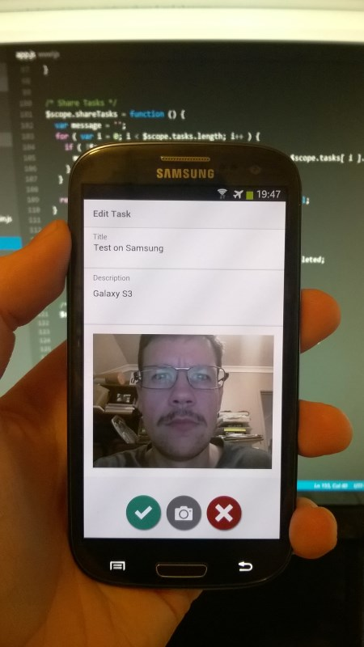

Cross-Platform app development on iOS (iPhone and iPad) and Android (Phone and Tablet) using the Cordova build tool. A Task app was built to allow persistent storage of tasks as well as integration of device hardware. The camera integration allowed users to attach a photo to a task. Completed tasks are moved to a separate list and uncompleted tasks can be shared via email.
Development tools used for this project included PhoneGap/Cordova, HTML5, CSS, JavaScript and the AngularJS framework.
This project was submitted for assessment as part of my Masters of Mobile Application Development course with Charles Sturt University and was awarded a grade of 92%.